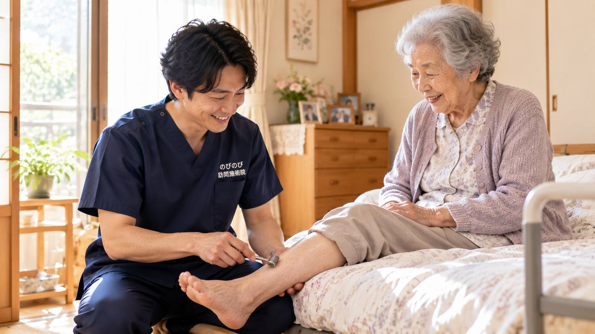

坐骨神経痛でお尻から足にかけて痛みやしびれが続くと、摂津市内の整形外科や治療院へ通うこと自体が重荷になっていきます。靴を履くときの前かがみ、車のシートに腰を下ろす動き、待合室で座って待つ時間。ひとつひとつが腰や脚にこたえます。「通えないなら仕方ない」と考える前に、国家資格をもつ施術者が自宅へ出向く形があることを知っていただければと思います。坐骨神経痛に鍼やお灸・手技でできること、先に医療機関へ相談すべきサイン、保険の対象や費用、摂津市での対応まで整理します。
まず大事なところから。坐骨神経痛で腰から足の痛み・しびれが長く続き、摂津市内の通院がつらくなった方は、自宅で訪問鍼灸マッサージを受けられます。かかりつけの医師が、慢性的な症状に鍼やお灸が必要と判断し同意書を出してくれれば、医療保険（はり・きゅう）の対象になります。1回の総額は3,950円、そのうちお支払いいただくのは1割の方でおよそ395円です。エリア内なら出張料や交通費が上乗せされることはありません。足に急に力が入らない、排尿・排便がいつもと違う。そうしたときは、まず医療機関へご相談ください。
摂津市で坐骨神経痛・腰から足の痛みにお悩みの方へ
摂津市では、千里丘や正雀の市街地から、鳥飼や味舌のあたりまで、市内各地へうかがっています。JR千里丘の駅前で信号を待ちながら、あるいは大阪モノレール摂津・南摂津の駅前で横断歩道を渡りきる前に赤へ変わりそうで、お尻から太もも裏にかけての痛みやしびれに足を止めてしまう。そんな瞬間に、坐骨神経痛の不便さをひしひしと感じている方が多くおられます。
畑仕事でしゃがんでは立ち上がり、家の中では中腰で洗い物や掃除を続ける。腰を酷使する暮らしの積み重ねが、いつのまにか片脚の重だるさやしびれとして表れてくることがあります。「のびのび訪問施術院」は、こうした暮らしの積み重ねのなかで腰から足の痛みを抱える方のご自宅へ、直接お伺いしています。
坐骨神経痛は「片脚に出る」痛みとしびれ
坐骨神経痛の多くは、お尻から太もも裏、ふくらはぎへと片脚に沿って走る痛みやしびれとして現れます。腰椎に由来することが多く、椅子に長く座ったあとの立ち上がり、歩き出しの一歩目、前かがみの姿勢、そして体の冷えが引き金になりやすいのが特徴です。段差を下りるときや、急に振り返ったときに、ズキッと足へ響いた経験があるかもしれません。
詳しい症状の見分け方やセルフケアの考え方は、坐骨神経痛・長引く腰の痛みのページでもご紹介しています。長く付き合う痛みだからこそ、まずはご自身の痛みの出方を知ることが第一歩になります。
こんなときは、先に医療機関の受診を
坐骨神経痛と思っていても、急な脚の脱力、両脚に広がるしびれ、排尿や排便の異常をともなう場合は、背景に緊急の対応が必要な状態が隠れていることがあります。こうしたサインがあるときは、鍼灸マッサージより先に、整形外科などの医療機関を受診してください。摂津市内にも通いやすい医療機関があり、まず原因をはっきりさせることが安心につながります。
訪問鍼灸マッサージでできること
医療保険の対象となるはり・きゅうの疾病は、神経痛・リウマチ・頸肩腕症候群・五十肩・腰痛症・頸椎捻挫後遺症の6つです。坐骨神経痛は「神経痛」や「腰痛症」の枠で該当しうるため、医師の同意のもとで施術を受けられる場合があります。当院では、はり・きゅうやマッサージに加え、関節を動かしたり歩行を支えたりする機能訓練も、1回の鍼灸に加えるケアとして行っています。これらについて別途の料金はいただきません。
鍼灸マッサージは病気そのものを治すものではなく、効き方には個人差があります。それでも、こわばった腰やお尻まわりをやわらげ、動き出しの不安を少しでも軽くしていくことを目指して、鳥飼や味舌の郊外から別府・正雀の住宅地まで、一軒一軒お伺いしています。
保険と料金、摂津エリアの訪問について
料金は1回の施術で総額3,950円、医療保険（療養費）を使うと自己負担は1割の方で約395円です。週2回の施術なら、1割負担で月あたり約3,160円が目安になります。ご利用には医師の同意書が必要ですが、要介護認定は不要で、介護保険の限度額とは別枠のため併用できます。仕組みの詳しい説明は料金はいくら？医療保険の自己負担額と仕組みをご覧ください。なお、同一部位で医療保険のリハビリと鍼灸を同じ月に同時に算定することはできません。
摂津市は対応エリア内のため、出張費はいただかず料金は一律です。どこまでお伺いできるかは対応エリアはどこまで来てもらえる？で、摂津全体の取り組みは摂津市の訪問鍼灸マッサージでご確認いただけます。駅前の横断歩道も、いつもの買い物の道のりも、少しでも安心して歩ける毎日へ。まずはお気軽にご相談ください。
よくある質問
摂津市で坐骨神経痛でも保険を使えますか？
慢性的に続く坐骨神経痛について、かかりつけの医師が鍼やお灸での治療を必要と認めて同意書を書いてくれ、かつ通院がむずかしい状態であれば、医療保険の対象になります。摂津市のかかりつけ医にお願いでき、同意書の段取りは当院が整えます。はじめに、症状と通院の状況をうかがわせてください。
ずっと前からの坐骨神経痛でも相談できますか？
急な激痛ではなく、慢性的に続いている坐骨神経痛が対象です。長引いているぶん、腰だけでなく脚全体を見ていくケアが向いています。ただし急に足に力が入らない、排尿・排便に異常があるといったときは、まず医療機関を受診してください。
しびれは楽になりますか？
こわばった腰・お尻・脚の筋肉をゆるめることで、しびれの出方や脚の重さが変わったというお話をうかがうことがあります。神経を刺激している筋肉の緊張をゆるめること自体が助けになる場合もあります。効果の出方には個人差があります。
1回の料金と出張費を教えてください。
1回の施術は総額3,950円で、お支払いいただくのは負担割合の分だけです。1割の方でおよそ395円が目安です。出張費・交通費の上乗せはありません。対応エリア内ならどこでも同じ金額です。そのつどの精算ではなく月ごとのまとめ払いで、その月の明細をお渡しします。
摂津市のどこまで来てもらえますか？
摂津市内全域に伺います。JR千里丘・阪急正雀・大阪モノレールの沿線や鳥飼・味舌方面など、市内であれば地域を問わず対応します。有料老人ホームやサ高住へも訪問しています。まずはお住まいの地域を教えていただければと思います。
要介護の認定を持っていませんが利用できますか？
できます。医療保険（療養費）で受けるサービスなので、介護保険の認定とは切り離して考えていただけます。認定がなくても、かかりつけの医師が必要と認めてくださればご利用になれます。介護保険の限度額とも別枠です。
摂津市でひとり暮らしでも受けられますか？
はい。ひとり暮らしの方も受けられます。ご家族などの緊急連絡先を確認したうえで始めますので、ご安心ください。ご本人が電話に出にくい場合は、離れて暮らすご家族からのご相談だけでも結構です。
腰から足のケアは毎回同じ人が来ますか？
できるだけ同じ担当者が続けて伺います。腰からお尻、脚全体の状態を同じ目で続けて見られるので、変化に気づきやすく、その方に合わせたケアを重ねていけます。同じ曜日・時間帯で伺うことが多く、生活のリズムにも組み込みやすくなります。

吹田市で坐骨神経痛・腰から足の痛みにお悩みの方へ｜自宅で受けられる訪問鍼灸マッサージ
続きを読む
摂津市で膝の痛みにお悩みの方へ｜自宅で受ける訪問鍼灸マッサージ
続きを読む都島区で坐骨神経痛・腰から足の痛みにお悩みの方へ｜自宅で受けられる訪問鍼灸マッサージ
続きを読む
箕面市で坐骨神経痛・腰から足の痛みにお悩みの方へ｜自宅で受けられる訪問鍼灸マッサージ
続きを読む
豊中市で坐骨神経痛・腰から足の痛みにお悩みの方へ｜自宅で受けられる訪問鍼灸マッサージ
続きを読む